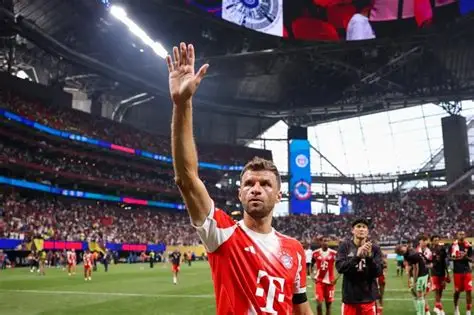
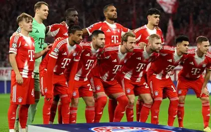

Thomas Müller
Thomas Müller is a Bayern Munich legend. He is known for his intelligent movement, creativity, teamwork, and ability to create important moments in matches.
Learn more about my favorite football club and players
FC Bayern Munich is one of the most successful football clubs in the world. The club was founded in 1900 and is based in Munich, Germany. Bayern is famous for its strong mentality, attacking football, and passionate supporters.
The club plays its home matches at the Allianz Arena and has won many Bundesliga titles, German Cups, and UEFA Champions League trophies throughout its history.

Thomas Müller is a Bayern Munich legend. He is known for his intelligent movement, creativity, teamwork, and ability to create important moments in matches.
Michael Olise is a talented attacking player with excellent dribbling skills, creativity, and the ability to provide dangerous assists.
Harry Kane is an elite striker famous for his finishing, goal scoring ability, passing, and leadership on the pitch.
